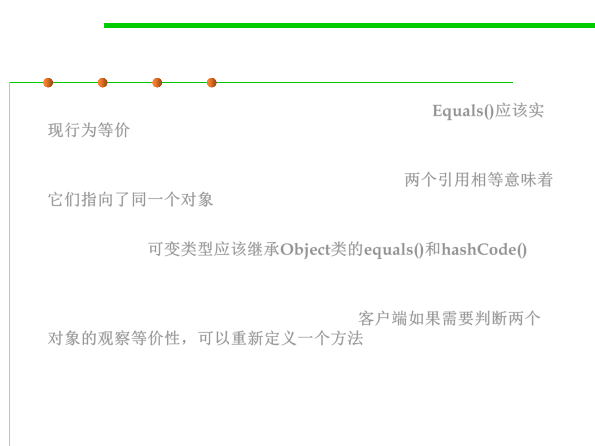

3.5 Equality in ADT and OOP
Lessons learned from this example
▪ equals() should implement behavioral equality. Equals()应该实
现行为等价
▪ In general, that means that two references should be equals() if
and only if they are aliases for the same object. 两个引用相等意味着
它们指向了同一个对象
▪ So mutable objects should just inherit equals() and hashCode()
from Object.可变类型应该继承Object类的equals()和hashCode()
▪ For clients that need a notion of observational equality (whether
two mutable objects “look” the same in the current state), it’s better
to define a new method, e.g., similar(). 客户端如果需要判断两个
对象的观察等价性，可以重新定义一个方法